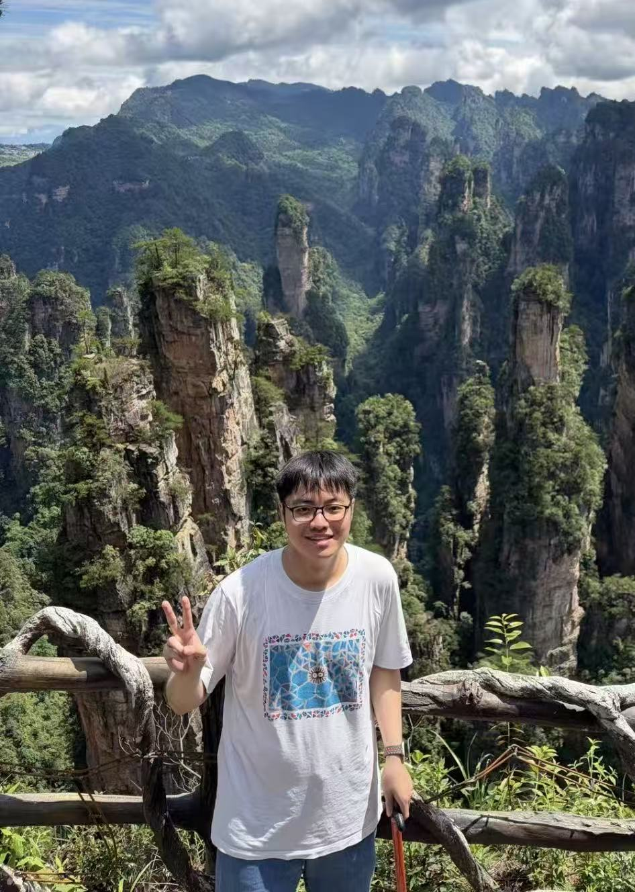

Biomimetics2025
I am an M.S.E. student in Mechanical Engineering at the University of Michigan. I received my B.E. in Robotics Engineering from South China University of Technology (2022–2026), where I worked with Prof. Yunquan Li on soft continuum robots.
My interests are sensor fusion & estimation, robotic manipulation and locomotion, and reinforcement learning.

* denotes equal contribution.
lerobot-calibrate.| Education |
|
| Competitions |
|
| Honors |
|
| Skills |
|